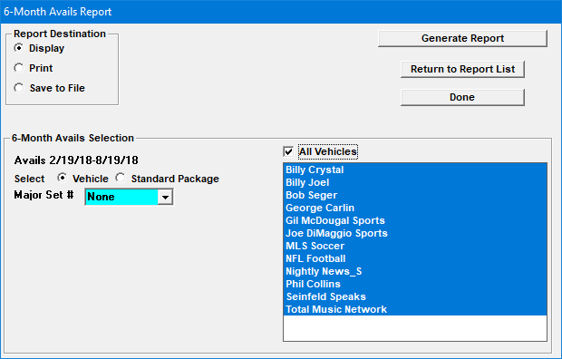
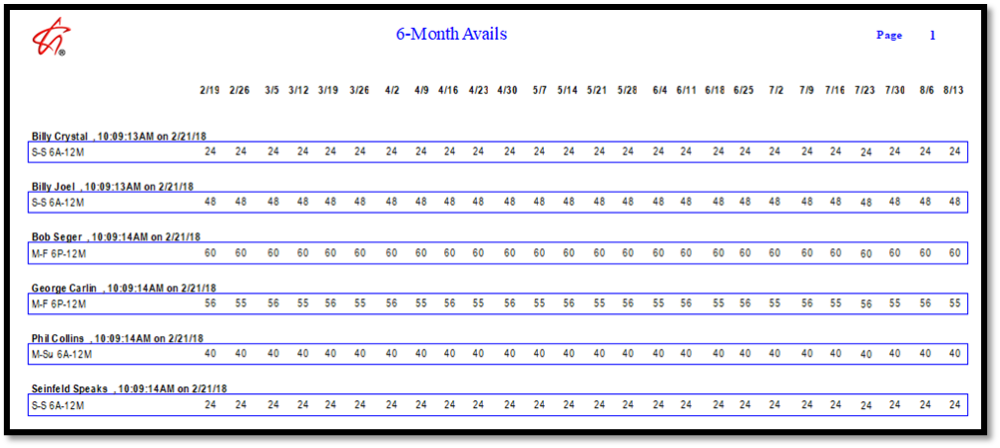

Generate ASF
The Generate ASF utility is a standalone utility that can be run periodically and that is used to generate six months of avails information for the “6 Months Avails” report. The utility itself is run separately, either using a shortcut to run it manually, or using CSI Server Manager or Windows Task Scheduler to have it run automatically on a schedule. Once the data has been generated by the utility, then the 6 Months Avails report can be run, which pulls the generated data and outputs it to a report.
Configuration Steps
The Generate ASF utility can be configured to run manually using a shortcut, or automatically using CSI Server Manager or Windows Task Scheduler.
Manual Configuration
To use the manual configuration method, you must create a shortcut that runs the GenASF.exe file, which is located in the csi\prod\exe folder.
- Right click on the GenASF.exe file and select “Send to Desktop (create shortcut)”.
- Right click on the shortcut that was created, and select “Properties”.
- Edit the “Start In” so that it points to the location of the Traffic.ini file, which is typically csi\prod\data, and then press OK.
- Double click the shortcut to run the program.
- After the program finishes running, you can run the 6 Months Avails report from the Traffic Reports screen.
Auto-Run Configuration
There are two ways to configure the GenASF.exe to be run automatically: using CSI Server Manager, or using Windows Task Scheduler.
CSI Server Manager
To use CSI Server Manager to run the program, you must configure the CSI_Server.ini file. For assistance with editing this file, contact support@counterpoint.net. An example of how the application section could be configured is shown below, with it being run once a week on Sunday at 12:30am. (To use the CSI Server Manager to run this task, “GenASF” must also be added to the MainSettings -> SectionNames field on the CSI_Server.ini.)
[GenASF]
Enabled = 1
WeekDays = 1000000
StartTime = 12:30am
Interval = 86400
Exe = X:\CSI\Prod\Exe\Genasf.exe
StartInFolder = X:\CSI\Prod\Data
KeepProgramRunning = 0
Windows Task Scheduler
As an alternative to using the CSI Server Manager to run the GenASF program, Windows Task Scheduler can be used instead.
Use the Task Scheduler wizard to create a new task by following these steps:
- Start Task Scheduler.
- Select Action -> Create Basic Task.
- Enter a name for the task (such as “Generate ASF”) and press Next.
- For the Trigger information, enter how often you want it to be run and follow the onscreen prompts to configure the schedule.
- For the Action information, select “Start a Program” and make the Program/Script point to the GenASF.exe and the Start In point to the location of the Traffic.ini, and then press Finish.
The Windows Task Scheduler will now run the program on the schedule that you selected.
Task Monitor
The Task Monitor program can be used to monitor the Generate ASF task by configuring the “Avails Summary Generation” task as a Periodic task.
For more information on using the Task Monitor, see the Task Monitor section in this document.
6 Month Avails Report Information
When run, the Generate ASF utility will gather contract and spot data to create avail summaries using the current rate card and output the information to a summary file. Then the 6 Months Avails report can be run to output the data from the summary file into a standard report format.
Report selectivity includes by vehicle with major sort selections and by standard package with totals by daypart or vehicle.
For this report, the contract types of Remnants, Direct Response, Per Inquiry, PSA, and Promo are excluded, and Fill Spots are also excluded (Version 7.0 and earlier). On version 7.1, the settings from Traffic Site Options “Demo Bar and 6 Month Avails report selectivity include” are used to determine whether Reservation, Remnants, Direct Response, and Per Inquiry contract types (and missed spots) should be excluded or included.
Note that the date selectivity is automatically filled out for this report and the report simply prints all 26 weeks that were gathered in the summary file.
6 Month Avails Report Selectivity Screen

The report output shows a summary of avails for six months across one page, as shown in the example below.
